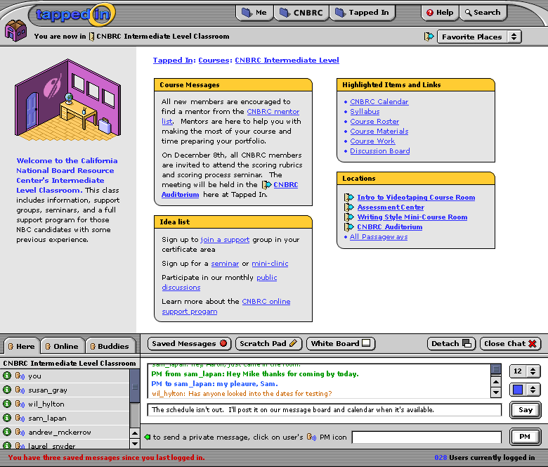
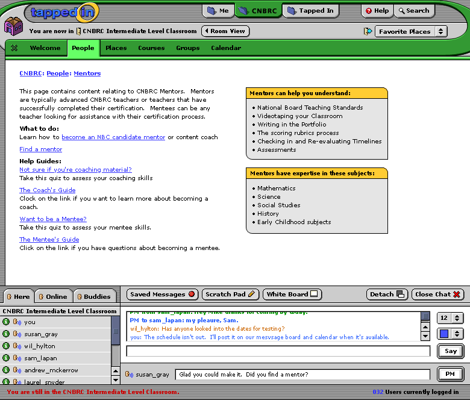

These look good. A question... Is the size of the input field for PM's going to change ... In the first mock-up, the instructions make the PM input field shorter and then in the second mock-up with the PM going to susan, the input field is a lot longer.
I was wondering if the instructions near the PM field should be on two lines instead of one. Or did you have another idea?
I like the color separation (gray) for the PM field.
Here are the screens I've developed for Mark's proposal.
The first screen shows a course room for an intermediate level CNBRC course. Links to other course rooms hint at other offerings from CNBRC, while a new item called "Idea List" shows some of the items you wanted to be shown for the proposal screen. The pull to the mentor screen is shown in the messages area
This is SO awesome! My only minor comment: maybe stickies in rooms should look a little different from stickies in information tabs, to help cue when you're in a room and when you're looking at information. Like maybe the sticky bar color could be green for CNBRC info, yellow for all rooms, blue for TAPPED IN info, etc. Just an extra redundant cue to visually delineate them.
Actually, the highlight boxes for rooms will change completely; these are going to be more "physical", like with thumbtacks or something to make them feel more like they're on an actual wall. No time yet for that on these mockups... But yeah, colors can change depending on what tab the content resides in.
The second screen shows the CNBRC: People: Mentors content screen. This is pretty straightforward. I didn't bother emulating the functionality from the ebay screens for subject/topics- I just listed them so they were present.
Aaron and All,
Today we're looking at the course manager tool and the latest mentoring iteration and focusing on the room navigation.
In the CNBRC room mockup we weren't sure where to look. This is we didn't know which links on the page in the white area with the yellow boxes were "most important" and felt overwhelmed by all the choices. We wanted the former subnav items to stand out more. (They were in one of the "sticky" boxes.)
We'd like to see how it looks to move the room links (former subnav items) under the room image and take the room Welcome text that is currently under the room image to the main part of the room (White Area). We think that the Welcome Text might be best not in a sticky and be across the top under the breadcrumbs. We're also thinking that the room image could be 80% of the size it is now and that nav + image area would stay the same through all room pages (see next paragraph).
On the pages other than the Welcome page, we'd like to have the room image still there at the top on the left and keep the room links for navigation below the picture. So you see the same thing on the left and the white area changes on the different pages. If you click on the picture of the room or on the welcome link in the room nav you get back to main room page.\
Recommended Title Changes for the "stickies":
We also talked about changing the "Locations" header on the Yellow box to "Passageways."
Changing "Idea List" to "Getting Started"
Changing "Course Messages" to "Announcements" (This can be the same in all types of rooms then)
Below we have nav bar suggestions for Individual offices, Course Rooms, and Group Rooms.
Sub navs For Rooms:
-Welcome (used to be called Room View, same as clicking on the image of the room)
-Calendar
-Discussion
-Files
-Links
-PassageWays
-Settings (only for owner, edit the room name, add new components for the room from templates, edit announcements, edit the picture)
For Course Rooms:
-Welcome
-Syllabus
-Course Description & Staff
-Policies
-Calendar
-Discussion
-Course Materials
-Reading List
-Files
-Links
-Course Work
-Assignments
-Quizzes & Tests
-Gradebook (for teacher and sees grades) Roster (pulls in student's Members profiles, and allows students to email each other)
-Passageways
-Settings (only for owner)
-Room Configuration
-Course Configuration (Course password, tracking, Course dates, public/private, keywords for course, delete this course)
-Group Management (creating, editing, assigning students to groups/random)
-Student Management (Invite students, approve enrollment request, group controls, student permission/teaching assistant panel)
For Group Rooms:
-Welcome
-About Us (pictures, group description, list of members)
-Calendar
-Discussion
-Files
-Links
-Passageways
-Settings (only for owner)
-Room Configuration
-Group Configuration (Expiration date, public/private, moderate/open, keywords for grouops, delete this group)
-Member Management (approve groups entry, permissions, block, gag, \r\nmoderator etc.)
Notes about Settings (right now more for us than Aaron):
The way Aaron has it with editing in "chunks" will work, the user will be taken to a screen where they can edit all the components of that "chunk." Ability to edit the "chunks" might also be available in settings, but settings would primarily support editing of non-visual settings like permissions for group members or for all rooms (including personal offices) adding/delete new stickies. There's X (like 5) sticky types and this is where people could turn them on or off.
I agree and was thinking this as well on the point about the room content. It's a good idea to have the subnav listed horizontally along the left side and a slightly smaller room map always present. That way, you're basically always "in the room" visually, so that if you switch to a content tab overlay and then click on "room view" you can return to whatever room content you were looking at before without any confusion.
I also will create different looking "stickies" for room highlighted content since they are still a concern at this point (in terms of differentiating these bits of info from highlighted bits on tab/content/overlay screens).
Thanks also for the sub-menu suggestions for different times of rooms.
I'll get to work on the next round of iterations this weekend.